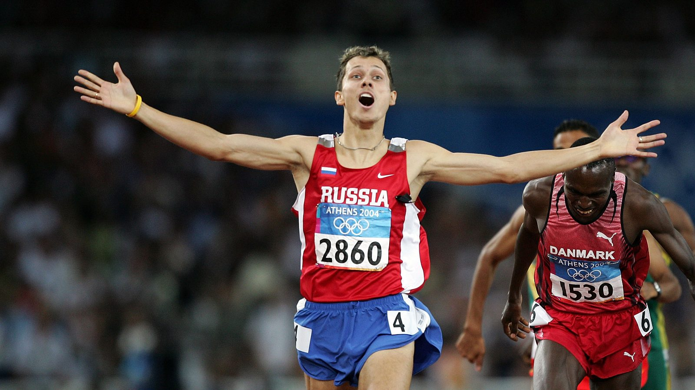
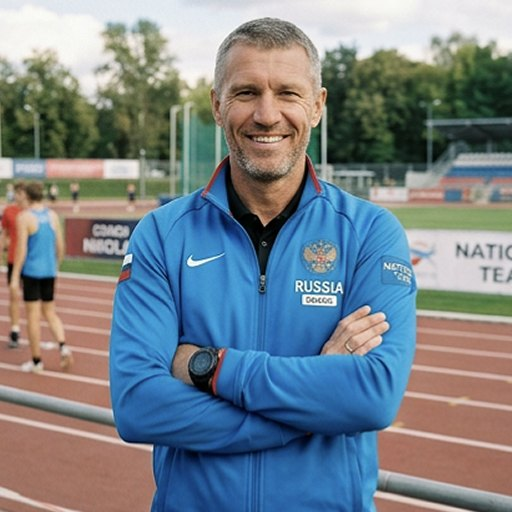
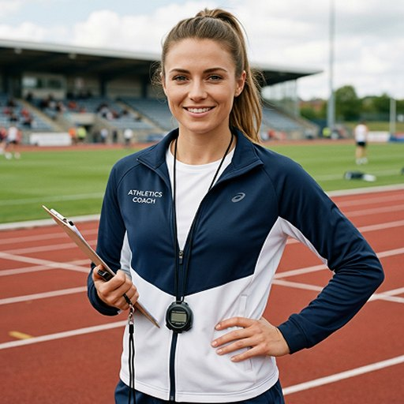
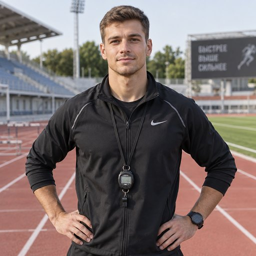
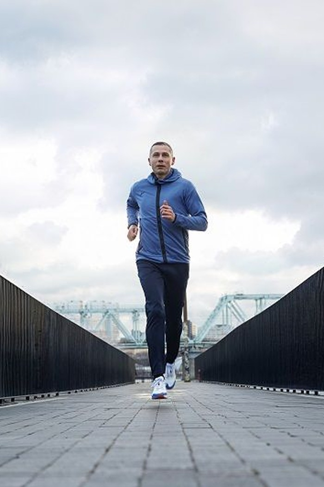

Методика
Юрий Борзаковский
Проводит одну тренировку на этапе, задаёт методику, проводит тесты и разбирает результаты. Ежедневно с группой работает штаб

Один из шести олимпийских чемпионов России в мужской лёгкой атлетике и единственный — в беговых дисциплинах
Тренировки
Что такое этап
8 тренировок с тестированием в конце. Разбор и понятный следующий шаг, поддержка тренерского штаба и главного тренера. Программа и нагрузка под ваш уровень и цель — для новичков, любителей и состоявшихся спортсменов
15 900 ₽ / этап
Что ещё входит
Аренда стадиона или манежа оплачивается отдельно
Скорость, техника, выносливость и ОФП. Нагрузка под ваш уровень и цель
В конце этапа: скорость и выносливость, зачёт и данные для нового плана
Видео, обратная связь, разбор ошибок и план на следующий этап
Новый план и 8 тренировок. Дальше — следующий уровень по той же схеме
Этапы идут один за другим круглый год. Можно продолжать без пауз или вернуться позже
Методика
Проводит одну тренировку на этапе, задаёт методику, проводит тесты и разбирает результаты. Ежедневно с группой работает штаб
Каждую неделю
Главный тренер и помощник ведут тренировки, следят за техникой и нагрузкой, выезжают на старты
База
Фиксированное окно для тестов и скорости. Аренда оплачивается отдельно
Партнёры — по желанию. Если хотите, воспользуйтесь предложениями партнёров: медицина, физиотерапия, массаж, экипировка.
Это не входит в стоимость этапа и не обязательно для тренировок
Соревнования
Соревнования — по желанию: количество зависит от желания и возможностей спортсмена и тренера. Уровень — от клубных до международных. На старте с вами тренерский штаб
Дистанции
5–21 км, 800 и 1500 м, эстафеты. Подбираем под вашу цель и уровень
Уровень
Клубные, городские, всероссийские и международные любительские старты, включая ветеранские
Поддержка
Разминка, тактика, контроль темпа, питание, восстановление и разбор после старта
Команда поддержки
Юрий и тренеры — ядро. Но сборная держится не только на них: планируем нагрузку, проверяем здоровье, восстанавливаем и собираем людей рядом

Старший тренер
Методика и группы

Средние дистанции
Группы «Продолжающие»

ОФП и техника
Группы «Начинающие»
Методика
Собирают план, следят за нагрузкой и корректируют его по вашему прогрессу
Здоровье
Проверяют здоровье и допускают к нагрузке; подсказывают, когда лучше остановиться
Восстановление
Помогают восстанавливаться после объёма и снимают перегрузку
Сервис
Запись, оплата, переносы и вопросы — быстро и по-человечески
Комьюнити
Мотивированные люди и группы «первые 5 км», «марафон», «восстановление», вечерние пробежки. Совместные выезды и события
По необходимости
Физиотерапевт, нутрициолог, психолог — подключаем, когда это действительно нужно
Регулярно
Круглый год и в разных районах: на улице — набережные, парки и стадионы, в холода — залы и манежи. Две тренировки в неделю

Ближайшая открытая тренировка
Открытая тренировка — диагностический вход в Сборную, а не массовая пробежка. Короткая разминка, техника, мини-тест и разбор — чтобы понять, с чего начать
Можно прийти с нуля, а можно с опытом и целью на старт. Смотрим ваш уровень, отвечаем на вопросы и показываем, как устроены этапы
Бесплатно и без обязательств. Если формат подойдёт — расскажем про этап, тест и соревнования. Если нет — останется одна хорошая тренировка
Что будет
Вопросы
Если вашего вопроса нет — оставьте заявку. Ответим лично
Да. Новички — не исключение, а часть Сборной. Начнём с техники, безопасной нагрузки и первого километра. На открытой тренировке можно пройти пешком — это не соревнование
Этап тренировок — 15 900 ₽: 8 тренировок, один тест в конце, видеоразбор, план и чат. Аренда дорожки или манежа оплачивается отдельно. Годовая опция — 12 этапов + 1 в подарок
Да. Для полумарафонцев главный тест — 10 км или 60 минут порога, а 800 м — опциональная проверка скорости. Готовим под вашу цель, а не под один норматив
Юрий задаёт методику, проводит тесты и ключевые тренировки, разбирает результаты. В каждом этапе — тренировка под руководством Юрия. Ежедневно с группой работают тренеры штаба
Тестовая батарея под цель: скорость, выносливость и дистанция. Максимальные тесты — 2–3 раза в год и вместо старта. В этапе — контрольный тест, а соревнование само считается проверкой
Кроссовки, форму по погоде и воду. Остальное расскажем перед стартом. Если есть травмы или ограничения — напишите заранее, подберём безопасную нагрузку
В этапе 8 тренировок. Один перенос по согласованию, максимум +7 дней; неиспользованные занятия сгорают. Если тренировку отменяет Сборная, занятие не сгорает
Условия возврата — в оферте. Если этап не подошёл, скажите — разберёмся без конфликта
Присоединиться
Расскажем про этап, тест и базу. Без отбора по уровню
ЗаписатьсяЧто дальше